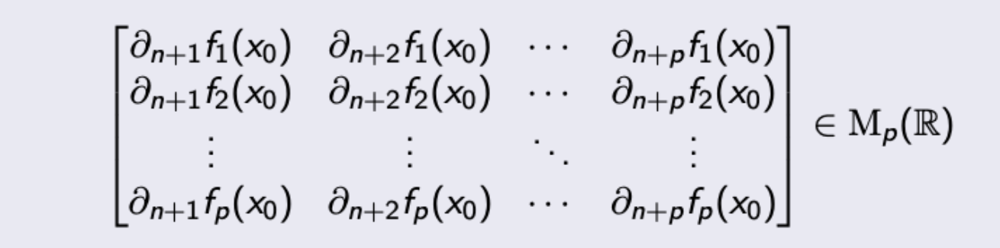

Calcul Différentiel
Définitions
- Les vecteurs \(x\in \mathbb{R}^n\) sont notés
- La norme euclidienne est notée
-
Le produit scalaire de deux vecteurs \((x,y)\in(\mathbb{R}^n)^2\) est noté
-
Si \(f\) est une fonction définie sur \(E\) à valeurs dans \(\mathbb{R}^p\), alors on note ses fonctions composantes \(f_{1},f_{2},\dots\) qui sont réspectivement de \(E\) dans \(\mathbb{R}\):
- Soit \(x\in \mathbb{R}^n\) et \(r>0\). La boule ouverte centrée en \(x\) de rayon \(r\) \(BO(x,r)\) est définie par
- Un sous-ensemble \(O\) de \(\mathbb{R}^n\) est ouvert dans \(\mathbb{R}^n\) si :
Limite
- Limite: Soit \(f:A \to F\) une application, on dit que \(f\) tend vers \(l\in F\) en \(a\) (adhérent à \(A\)) si : Notation :
Continuité
-
Une fonction \(f:]a,b[ \to \mathbb{R}\) est continue en \(x \in ]a,b[\) si :
-
Soit \(f:O \to \mathbb{R}^p\), une fonction \(f\) est dite continue en \(x \in O\) si :
-
La fonction \(f\) est continue en \(x\in O\) ssi \(f_{j}\) est continue en \(x\in O\) pour tout \(j \in \{1,\dots,p\}\)
-
La fonction \(f\) est dite continue sur \(O\) si elle est continue en tout \(x \in O\).
-
L'ensemble des fonctions continues sur \(O\) à valeurs dans \(\mathbb{R}^p\) est noté :
- L'ensemble est stable par addition, multiplication, division (si le dénominateur ne s'annule pas)
Exemple : Fonction polynomiale, \((x,y,z) \mapsto x^2+y^2x + 3xyz\)
-
\(f\) est continue, alors toutes les application partielles \(f_{j}\) sont continues. La réciproque est FAUSSE.
-
Pour prouver \(f\) est continue en \(a \in A\), on prouvera que
- \(f\) est un composé des fonctions de classe \(\mathcal C^0\)
- \(f\) admet une limite en \(a\) ([[01 Limite et Continuité#Limite]])
-
Pour établir l’existence d’une limite en 0, il est parfois utile d’évaluer \(f(r\cos θ, r \sin θ)\) et de considérer son comportement lorsque \(r\) tend vers 0.
Dérivées Partielles
- Soit \(O\) un ouvert non vide de \(\mathbb{R}^n\) et soit \(f:O \to \mathbb{R}^p\).
- On dit que \(f\) est admet une dérivée partielle par rapport à la \(j\)-ième variable en \(x\in O\) si la fonction ci-dessous est dérivable en \(x_{j}\) : ou la fonction ci-dessous est dérivable en \(0\) : ce que je prefère
-
Le vecteur dérivée de \(\mathbb{R}^p\) obtenu, on note :
-
On définit la \(j\)-ième dérivée partielle de \(f\) par
-
Une fonction peut admettre des dérivées partielles (dans toutes les directions) en un point sans y être continue.
- Exemple : \(f(x,y)=\begin{cases}1 &\text{ si } 0 <y<x^2 \\0 &\text{ sinon }\end{cases}\)
-
Calculation par Python :
- Possibilité d'un point extremum : Soit \(f:\mathbb{R}^n\to \mathbb{R}\), si \(f\) différentiable, et admet un extremum local en \(a\), c'est nécessaire de suffire :
Matrice Jacobienne
- Matrice Jacobienne : Soit \(f:O\to \mathbb{R}^p\), La matrice de la différentielle \(\mathrm{d}f_{{x_{0}}}\) de \(f\) en \(x_0\) dans les bases canoniques de \(\mathbb{R}^n\) et de \(\mathbb{R}^p\) est appelée le matrice de jacobienne de \(f\) en \(x_{0}\) notée \(\mathrm{J}f_{x_{0}}\) :
Dérivée suivant un vecteur
-
Dérivée Directionnelle d'une application dans certaine direction : Pour un vecteur \(v ∈ \mathbb{R}^ n\) non nul, on peut définir plus généralement (sous réserve d’existence) la dérivée directionnelle de \(f\) dans la direction \(v\) en \(x\), la dérivée de la fonction \(t \longmapsto f(x+tv)\) en \(0\), notée \(∂_v f (x)\), par
-
La dérivée directionnelle de \(f\) dans la direction \(v\) est alors définie par :
-
En particulier, \(\partial_{j}f(x)\) est la dérivée directionnelle de \(f\) dans la direction \(e_{j}\) en \(x\) :
-
Pour calculer la dérivée directionnelle d'une application : On peut directement calculer la dérivée de \(t \mapsto f(x+tv)\) en \(0\).
Différentielle
-
La notation petit \(o\) désigne une fonction \(\phi\) définie au voisinage de \(0_{\mathbb{R}^n}\) à valeurs dans \(\mathbb{R}^p\) telle que
- Exemple : Si \(\alpha>1\) et la fonction \(f: x \mapsto | |x | |^\alpha\)
-
Différentiable et Différentielle : \(f:O\to \mathbb{R}^p\) est différentiable en \(x_{0}\in O\) s'il existe une application linéaire \(df_{x_{0}}\in \mathscr{L}(\mathbb{R}^n,\mathbb{R}^p)\) telle que pour tout \(h\in \mathbb{R}^n\) tel que \(x+h \in O\), et \(\mathrm{d}f_{x_{0}}\) s'appelle la différentielle de \(f\) en \(x_0\), défini par :
- Dire que \(f\) est différentiable en \(x_0\), c'est dire qu'elle admet un développement limité d'ordre 1 au voisinage \(x_0\).
- Le terme \(f (x_0) + \mathrm{d}f_{x_0} (h)\) est donc approximation affine locale de \(f\) en \(x_0\).
-
\(f: O \to \mathbb{R}^p\) est différentiable sur \(O\) si \(f\) est différentiable en tout \(x \in O\).
-
Lien avec la dérivée selon un vecteur : car \(f(x_{0}+tv)-f(x_{0}) = \mathrm{d}f_{x_{0}}(tv) = t\mathrm{d}f_{x_{0}}(v)\).
-
Si une fonction est différentiable en \(a\), donc elle est continue en \(a\).
-
Lien entre différentielle et dérivée (dimension 1, c'est-à-dire une seule variable) : Soit \(f : I → \mathbb{R}\). \(f\) est différentiable en \(x_0\) ssi elle est dérivable en \(x_{0}\)
- Si c’est le cas, pour tout \(h ∈ \mathbb{R}\) tel que \(x_0 + h ∈ I\), On en déduit que \(df_{x_0} (h) = f'(x_{0})\) pour tout \(h ∈ \mathbb{R}\).
-
Lien entre différentielle et dérivées partielles : Soit \(f : O \to \mathbb{R}^p\). Si \(f\) est différentiable en \(x_0\), alors elle admet des dérivées partielles en \(x_0\) et
- Si c'est le cas, pour tout \(h \in \mathbb{R}^n\) tel que \(x_{0}+h \in O\),
-
Pour montrer que \(f\) est différentiable, essayer de prouver que :
- Ses dérivées partielles existent à ce point
- Montrer que \(\(\lim_{ h \to 0 } \frac{f(x_{0}+h)-f(x_{0})- O(\Vert h\Vert )}{\Vert h\Vert }\to 0\)\)ou de trouver une cas contraire.
Différentielle Seconde
- Un fonction admet une différentielle seconde au point \(x\) si sa différentielle est différentiable. On l'écrit \(\mathrm{d}f_{x_{0}+h}\) :
Opérations sur les fonctions différentiables
-
Linéarité de la Différentielle :
- Si deux fonction est différentiable, donc leur combinasion linéaire est aussi différentiable.
- Si \(f\) et \(g\) sont différentiables, donc
-
Produit de fonctions réelles :
- Si \(f\) et \(g\) sont différentiables, alors :
-
Le cas des fonctions composées :
- Soit \(f:O \to \mathbb{R}^p\) et \(g:O\to \mathbb{R}^q\). \(g \circ f\) est différentiable en \(x_0\) si \(f\) est différentiable en \(x_0\) et \(g\) est différentiable en \(f(x_{0})\), et :
-
Différentielle d'une application bilinéaire :
- \(B(f,g):\mathbb{R}^{p_{1}} \times \mathbb{R}^{p_{2}} \to \mathbb{R}^q\) est bilinéaire, \(f\) et \(g\) deux fonctions différentiables en \(x_{0}\), alors \(B(f,g)\) est différentiable en \(x_{0}\) et :
De Classe \(\mathscr C^1\)
-
On dit que \(f\) est de classe \(\mathscr C ^1\) sur O si elle vérifie les conditions équivalentes : Équivalence de la continuité de la différentielle et des dérivées partielles :
- \(f\) admet des dérivées partielles sur \(O\) et ces dérivées partielles sont continues sur \(O\) ;
- \(f\) est différentiable sur \(O\) et \(\mathrm{d}f\) est continue sur \(O\).
-
Pour montrer que une fonction est de classe \(\mathscr C^1\), on doit montrer que la différentielle est continue, ou les dérivées partielles sont continues.
Date : 2023-03-01 Cours : [[Slides Semaine 3 théorème des fonctions implicites (remplis).pdf]] Date : 2023-03-08 Cours : [[Slides semaine 4 remplis.pdf]]
Théorème des Fonctions Implicites
-
Pour une fonction implicite, est-ce que l'on peut exprimer une variable par autres variables ? But : On s'intéresse à l'ensemble Savoir si : on peut écrire \(y\) en fonction de \(x\) ou inversement.
-
Exemple (Linéaire) : Soit \(f\in \mathscr{L}(\mathbb{R}^n,\mathbb{R}^p)\), \(A = \mathrm{Mat}_{p,n}(f)\) dans les bases canoniques de \(\mathbb{R}^n\) et \(\mathbb{R}^p\), alors \(\(f(x_{1},\dots,x_{n})=0_{\mathbb{R}^p} \iff AX = 0\)\)Cette équation admet une infinité de solutions si \(n>p\).
- La dimension de \(\Gamma_{f}\) dépend du rang de \(A\) ou \(f\).
- Soit \(X_{1}\in \mathbb{R}^j\;(j<n)\), en déduit que \(X_{2}=-C^{-1}BX_{1}\) si \(C\) est inversible, en ce cas \(p=n-j\) car c'est une matrice carrée.
-
L'idée centrale du calcul différentiel : Linéariser. La géométrie de \(\Gamma_{f}\) de'pendre de la différentielle de \(f\).
-
Notations de la différenetielle de la fonction La différentielle de la fonction \(f(x, y)\in \mathbb{R}^{n_{1}\times n_{2}} \to \mathbb{R}^p\) des variables en certain valeurs :
-
La matrice de \(\mathrm{d}[f(a,\cdot)]_{b}\) doit être inversible. En ce cas, nécessairement \(p=n_{2}\).
-
Théroème des fonctions implicites : Soit \(f: O \to \mathbb{R}^p\) de classe \(\mathcal{C}^k\), \(O=(\mathbb{R}^{n_{1}}\times \mathbb{R}^{n_{2}}) =( \mathbb{R}^{n} \times \mathbb{R}^p)\), On suppose que Alors : (\(\phi\) est de classe \(\mathcal{C}^k\))
- On a \(\phi(a)=b\)
-
L'inversibilité de \(\mathrm{d}[f(a,\cdot)]_{b}\) se traduit matriciellement par le fait que la matrice  est inversible ssi son déterminant est \(\ne 0\)
-
Puisque \(\mathrm{d}[f(a, \cdot)]_{b}\) est inversible et \(\mathrm{d}f\) est continue, on en déduit que
- Différentielle la relation donne la différentielle de la fonction d'aprèes [[1A Dérivée Partielle et Différentielle#Cas des fonctions bilinéaire]]:
-
Exemple : Les courbes du plan (dans \(\mathbb{R}^2\))
- Rappel que \((x, y) \in \mathbb{R}^n \times \mathbb{R}^p\), ici c'est
- La condition d'inversibilité par exemple : la fonction donné : \(f(x,y) =x^2+y^2 - 1 =0\), donc \(\partial_{2}f(a,b) =2b \ne 0\)
- Si c'est le cas, au voisinage de \((a, b)\), si \(f(x,y)=0\) alors \(y=y(x)\)
-
Exemple : Les surface de l'espace
- Rappel que \(((x,y),z) \in \mathbb{R}^n \times \mathbb{R}^p\) avec \(n=2,p=1\)
-
La condition d'inversibilité est
-
Si c'est le cas, au voisinage de \((a,b)\), si \(f(x,y,z) = 0\), alors \(z=z(x,y)\)
-
Exemple : Les courbes de l'espace
- Rappel que \((x, (y,z)) \in \mathbb{R}^n \times \mathbb{R}^p\) avec \(n=1,p=2\)
- La condition d'inversibilité est Au voisinage de \((a,b)\), si \(f(x,y,z) =0\) alors \(y =y(x)\) et \(z=z(x)\)
(À COMPLETER...)
-
Application : Trouver une DL autour d'un point
-
Application à la thermodynamique
-
Application : Les racines de polynômes